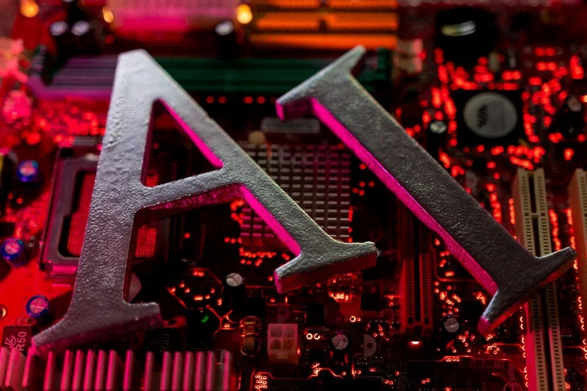

Bill Gates'ten yapay zeka yorumu: Şimdilik çok aptal
Microsoft'un kurucusu Bill Gates'ten yapay zekanın geleceğine dair heyecan verici öngörüler geldi. Gates, "5 yıl sonra herkesin yapay zekalı kişisel asistanı olacak. Yapay zeka şimdilik çok aptal." diye konuştu.

HERKESİN YAPAY ZEKALI ASİSTANI OLACAK
"Yapay zeka şimdilik çok aptal, ama beş yıl içinde herkesin yapay zekalı kişisel asistanı olacak"
Teknoloji ve yapay zekanın geleceğine ilişkin bu tahminler Microsoft'un kurucusu Bill Gates'e ait.
BİLGİSAYAR KULLANIM ŞEKLİNİ DEĞİŞTİRECEK
Milyarder iş insanı, "Gates Notes" adlı blogunda, yapay zekanın insanların bilgisayar kullanım şeklini kökten değiştireceğini" savundu.
Gates’e göre, farklı görevler için farklı uygulamalar kullanmak yerine, kullanıcıların akıllı cihazlarına ne yapmak istediklerini söylemeleri yeterli olacak.